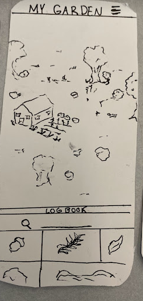

Design Refinement
Developing the design gradually through a series of increasingly detailed refinements.
Above-left: Our wire frame within our Figma prototype that shows most of our app, made with main pages and arrows. Above-right: Our first draft of our wire frame of our app, made with post-it notes and string.
Design
Our design concept is centered around crafting an innovative and engaging approach for individuals to explore the diversity of plants, thereby fostering a deeper connection between users and the natural environment. Our aim is to enhance, not detract from, the user's interaction with nature. The app's flexibility allows users to control their level of involvement. Beginning at the home page, users have the option to search for plants either by name or by capturing an image. This leads them on a journey to identify the plant in question, which can then be added to their "Log Book". The Log Book acts as a comprehensive record of all the plants a user has discovered and stored in their account, complete with images and informative details that offer an educational experience for those wanting to learn more. We wanted to entice users to collect plants/expand their Log book, and to do so we've introduced a feature to create their own virtual garden. Here, they can showcase the plants they've documented, personalizing their garden space to their liking. This interactive element aims to incentivize users to embrace the nature around them and learn about the space they live in by capitalizing on users’ desire to customize and display their collections. Additionally, our app features a settings and profile page, reminiscent of classic social media like MySpace, where users can list their top five plants and connect with others.
With this wireframe, we decided to implement the basic functionality of the app: Users can take a photo of a plant, identify it, and add it to their collection. Other features, like navigating through the garden or setting up a profile, were left for later iterations. To facilitate a heuristic evaluation, we wrote the following instructions:
Hello and welcome to our app!
Imagine that you are a curious urbanish person who knows little about the plants around them, but is interested in learning about their natural environment and wants to connect to nature more in their everyday life! In this initial interaction prototype we would like you to try identifying a plant by taking a picture and adding it to your logbook of plants. Adding plants in other ways will not work at this phase - however, we are curious about what you would want to show up when you add a plant, or how you would even go about that.
Thank you and any feedback about the interaction and character would be very appreciated!
Insights

Above: Garden page of our app. Our testers were confused by this page and it is one of the most important ones in our app, so we will be redesigning it for the next phase.
Our biggest insight from the heuristic evaluation was that the main function and interaction of our app was unclear to a new user. We see the main function of our app as adding local plants and interacting and learning more about them through your garden page. Our testers understood and liked the flow of finding and identifying a new plant, but did not have a clear idea of what to do with a plant after you find it outside. We will make this interaction more intuitive for users by including some titles on our pages like “My Garden” or “My Plant Log Book”. We might also include a tutorial mode that has a descriptive walk-through of the app for first-time users.
We can also implement that same insight in smaller ways by labeling all of our buttons with icons and a title/short description. We did this for the ‘white oak identified’ page and our reviewers found that format more clear. We plan to implement all our buttons in a similar manner.
Changes
In our paper prototype, we explored a lot around having a community posting board, or other in-app interactions between users. At the end of the last phase, we decided to move away from a posting board because the potential users we talked to were concerned about the inherent risk in digital spaces when it came to user safety. This led us to eliminate chat and location features. We still plan to implement a mechanic to add friends, but have eliminated any communication past sending friends gifts and showing off their gardens.
One thing that we are still considering about our final design is the style of the garden page. In our paper prototype, we depicted the garden page as a top-down view where you could be able to scroll around a map. In our figma, we experimented with having the garden as a first-person view. We have not decided what would be best yet. We think that a top view might be more intuitive to navigate and customize, but that a first-person view would allow for a more visually appealing and clearer picture of the plants.
Above-left: Current garden page where the garden is in first person view. Above-right: Garden page from paper prototyping phase where there is more of a top down view of the garden.
Forward-Looking Questions
How do you design an app that expresses information as knowledge while keeping it engaging and fun?
Our current layout allows users to log plants and store them in their gardens. There is no knowledge imparted other than the name of the plant. Users are able to click on the plant for more information, but users who are focused on playing the game might not end up learning very much.
How do you keep users safe while providing community aspects?
Our team originally wanted to add some form of chat room for community building and discussion. As our app has a wide range of users, we decided that a chat function might lead to inappropriate messages or other dangerous effects. However, we still want to facilitate community interaction in some way. So far, we have a profile that incorporates.
How do you draw in a user base to interact with your app? What design decisions should be affected by the need for “hype” around an app?
An app needs to have users to have an impact. Keeping users entertained is important but you have to pique a user's interest for them to download an app. Will having an interesting idea be enough? What compels a user to download: visuals, trendiness, etc?
Shortcomings
We have noted various shortcomings both from our own evaluation of our app, as well as the feedback we received via the Heuristics evaluation. Overall, we have noted a lack of the gamification that we originally had intended to incorporate. This limits some of the interactions we outlined within the context of our personas, specifically that of Mary and Emma. Mary hoped to use our app to encourage her daughter to engage with nature. This also limits the engaging factor of our app, which all of our personas desired. We hope to address this shortcoming in the next phase.
We also received various feedback on cosmetic issues and errors within our app, which we hope to mitigate in order to make a more cohesive app and not inspire frustration. Specifically, the use of a flower to represent the garden and the overall lack of text to label the navigational buttons at the bottom of the screen was a focal point of ours. We hope to clarify the intended use of the button and possibly change the logo.
Tradeoffs
When moving our design online and into the digital space, we had to make many design decisions and narrow our scope. As we adapted our app to a digital space, we wanted to keep readability. We did this by lowering the amount of information on each page, increasing the font size, and changing our color palette to increase contrast. We worked to lock down our color pallet and font to create a general branding guide and solidify our visual language for a cohesive digital space. We, in general, had to work to adapt our design to fit within a mobile phone screen, changing the dimensions of many of our features. Once our design was seen in the visual space and we could visually compare it to both other apps we had seen and our ideas for an app, we realized that we had neglected to add a back button. We then had to restructure our design to add one, following our mental model of an app and what we expected.
We also faced some challenges with FIGMA’s scope. We were unable to have a drag-and-drop function for our Garden feature as we intended. We also intended for users to be able to scroll through their LOGbook via the green bar, and then to select a plant, which would then appear in the garden. They would then have the ability to be moved and formatted in the user's garden by hand. However, we were unable to show this feature and were only able to show plants already within the garden. Our Logbook feature was not able to scroll up, and instead, we set it up to lead to a different page, which led to a jarring change for users. Another aspect of the garden that was difficult to demonstrate within FIGMA was how to navigate in the garden. We intended for users to be able to navigate around the garden with their fingers but we had trouble translating this into FIGMA. We are unsure what is the best approach to change these features so they fit in FIGMA’s bounds.

Above: Garden page with green arrow button at the bottom, and LogBook page with green arrow at the top. Button takes you between the LogBook and the Garden; theoretically instead of a button users would scroll up or down and the see the LogBook or garden, but we did not know how to implement more complex functions in Figma
Effort Chart
People in bold did more work on section - but all people listed, once again, had fun!
| Wireframe | Declan, Raul, Meredith |
| Visual Design | Meagan, Norah |
| Figma Protoype | Norah, Raul, Meagan, Declan |
| Heuristic Evaluation | All |
| Updating Website | Meredith |
| Write-Up | All |